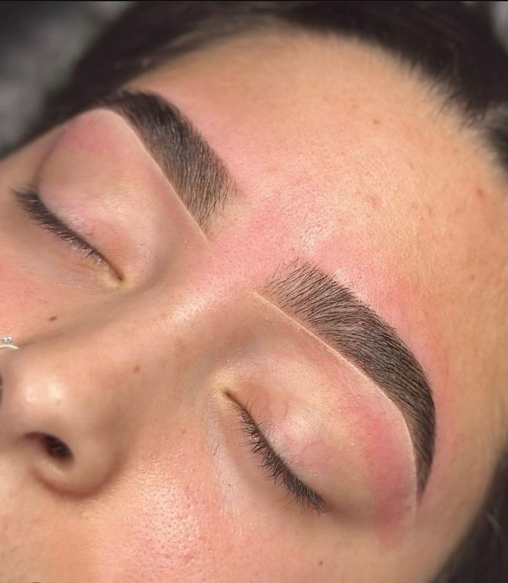
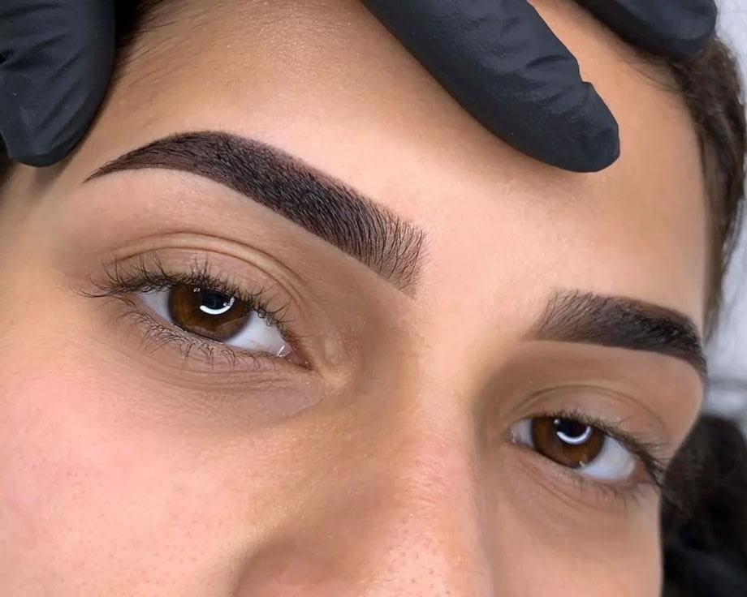
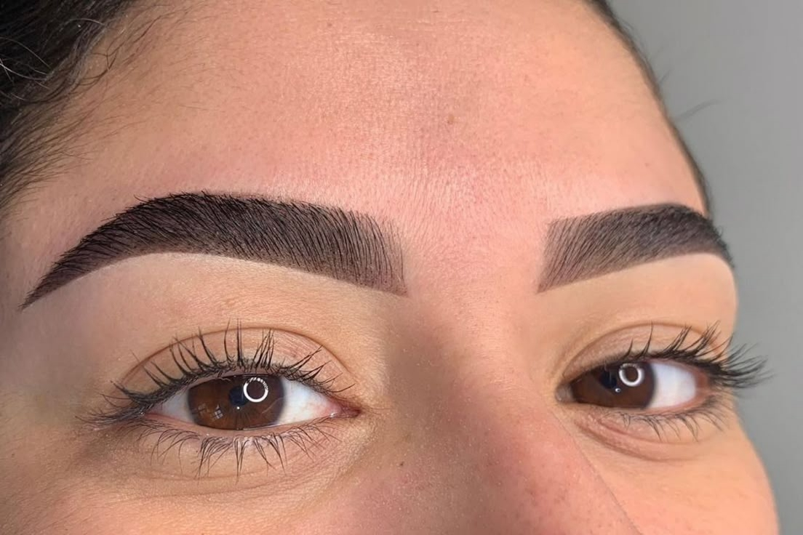
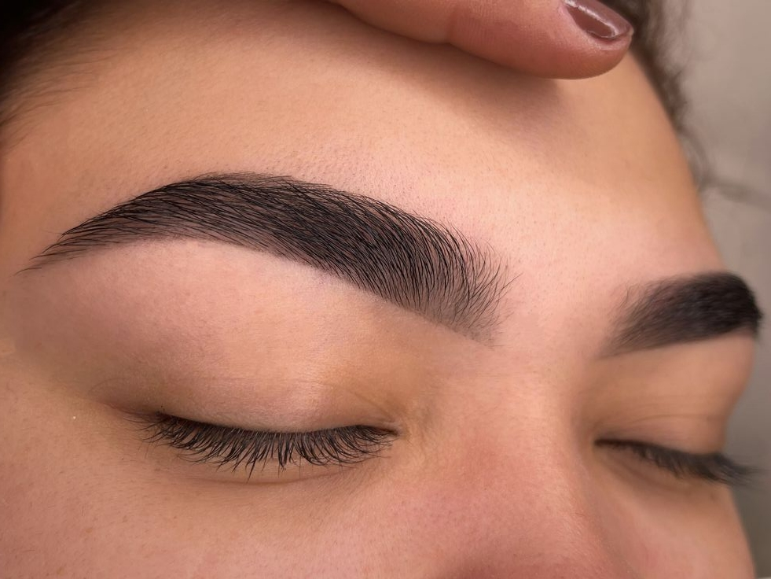
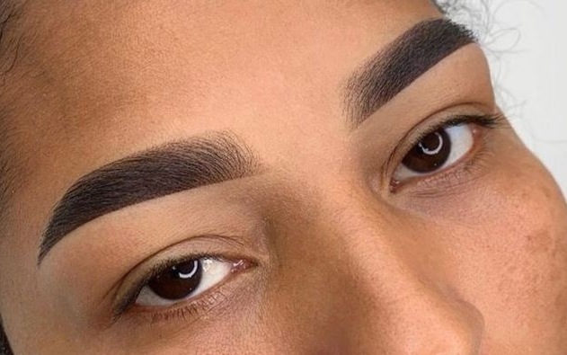
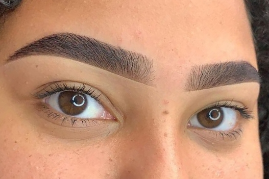

Ariane Duarte, especialista em micropigmentação de sobrancelhas e apaixonada pelo universo da estética.
Encontrei na micro de sobrancelha uma forma de cuidar, transformar e realçar a beleza natural de cada um, fio a fio, com leveza e delicadeza.
Minha missão é entregar um olhar mais confiante, harmonioso e único, sempre com muito carinho e dedicação. Nossos procedimentos são personalizados, respeitando o que você tem de mais lindo, sua essência e características únicas.
Design com Henna
A principal queixa de quem busca o Design com Henna são as falhas, o visual ralo ou a falta de um formato definido. O procedimento corrige essas imperfeições de maneira indolor e imediata, desenhando um novo contorno que valoriza a moldura do seu rosto. É a solução ideal para quem quer um resultado mais duradouro que a maquiagem, mas sem o compromisso de um procedimento semipermanente.






